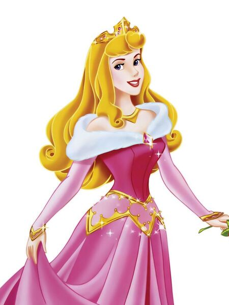
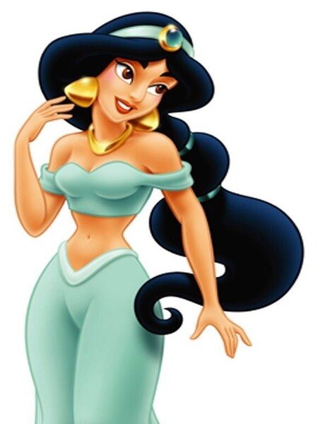
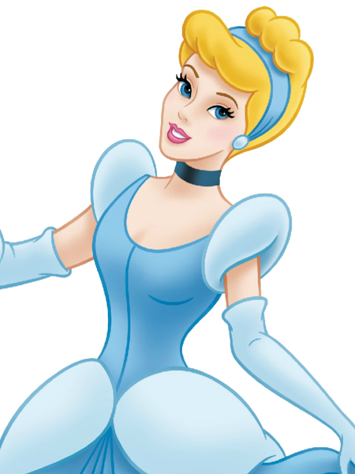
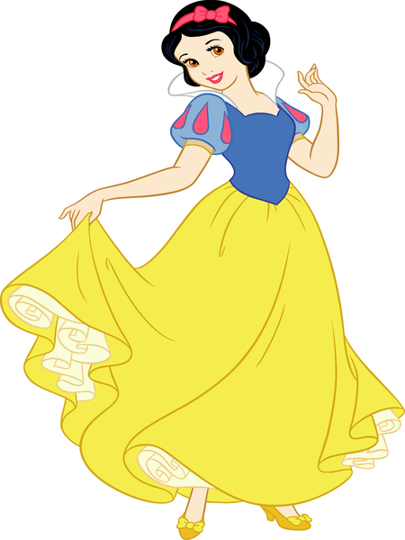
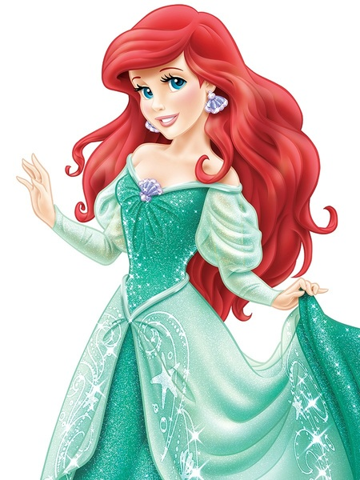
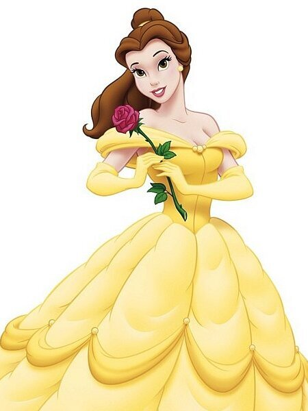

Аврора
Аврора — добродушная и мечтательная девушка,
которую воспитывали в лесной избушке три феи:
Флора, Фауна и Меривеза, оберегая её от проклятия волшебницы Малефисенты.
Накануне шестнадцатилетия Авроры веретено приводит заклятие в действие,
и девушка засыпает глубоким сном. Снять заклятие сможет только поцелуй истинной любви

Жасмин
Принцесса Жасмин мечтает о свободе и очень хочет увидеть весь мир,
но заботливый папа-султан не позволяет ей выходить даже за стены дворца.
Решительная принцесса сбегает на поиски своего счастья, а случайное знакомство
с Аладдином открывает для неё дверь в мир приключений
Открытая и смелая, Жасмин не боится бороться за собственное счастье.

Золушка
Золушка - заботится об окружающих и дружит с животными,
которые всегда приходят к ней на помощь.
Трудолюбивая Золушка день напролёт занимается работой по дому,
чтобы угодить своей мачехе и сводным сестрам,
но она не позволяет печалям и невзгодам взять над ней верх.
Отважная девушка искренне верит в чудеса и не боится следовать за своей мечтой, несмотря на трудности.

Белоснежка
Белоснежка покоряет всех своей добротой и красотой.
Милая и заботливая, принцесса всегда готова прийти на помощь — этими качествами и воспользовалась
Злая Королева, мачеха Белоснежки, чтобы сжить со света свою падчерицу.
Белоснежка, вынужденная покинуть родной замок и прятаться в лесу,
не поддаётся отчаянию и старается сохранять оптимизм.

Ариэль
Ариэль — младшая из семи дочерей морского короля Тритона, очарованная миром людей.
Любопытная Русалочка проводит свободное время, исследуя затонувшие корабли в поисках
человеческих артефактов для своей тайной коллекции. Когда Ариэль влюбляется в принца Эрика,
она проявляет настойчивость и жертвует самым дорогим, чтобы быть рядом с ним.

Белль
Имя Белль в переводе с французского означает «красивая», и все жители деревушки,
где она живёт, готовы подтвердить, что эта юная особа — самая прекрасная девушка в мире.
Однако красота не единственное, что отличает Белль.
Больше всего на свете любознательная девушка любит книги,
из которых она узнает о дальних странах и удивительных приключениях.